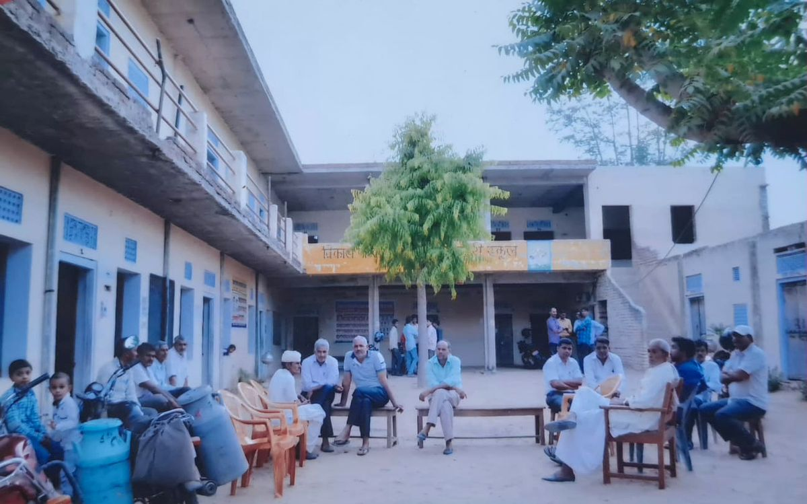
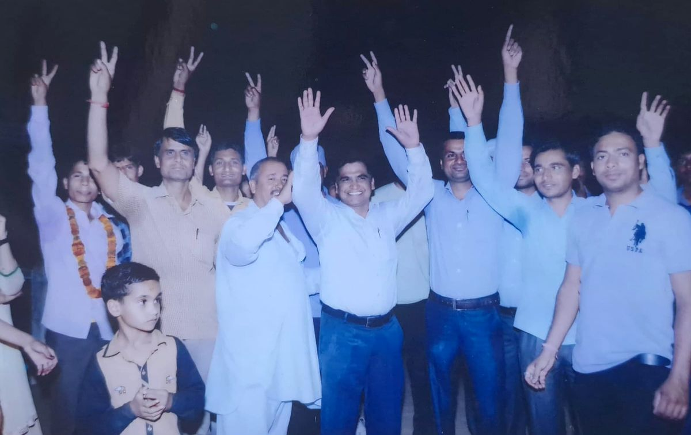
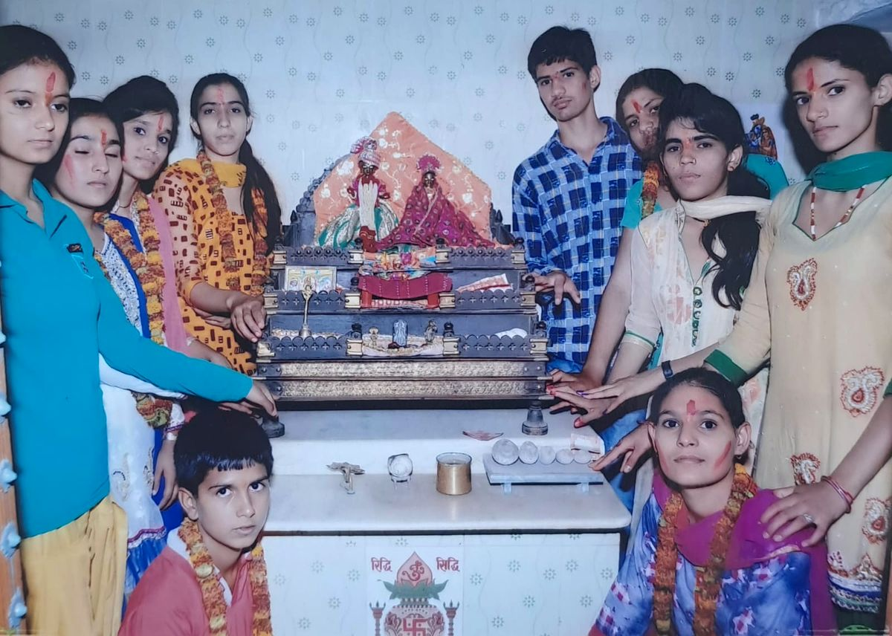
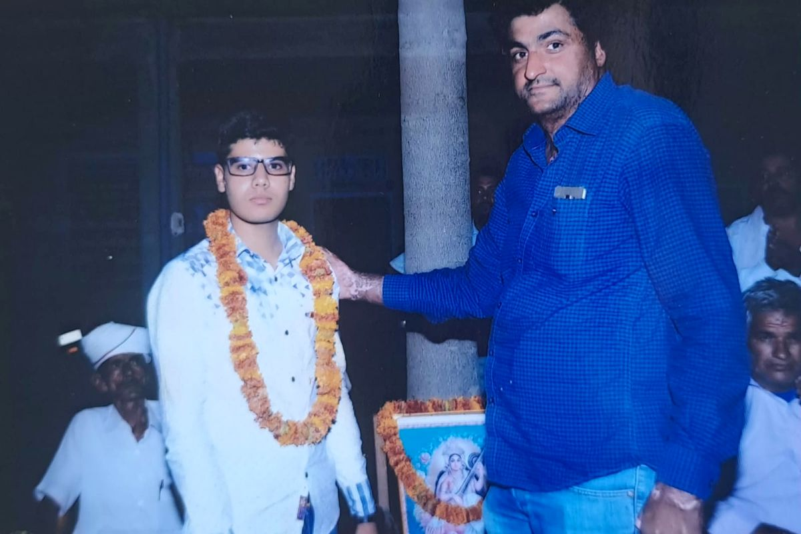
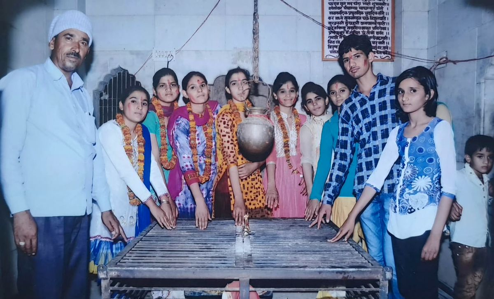
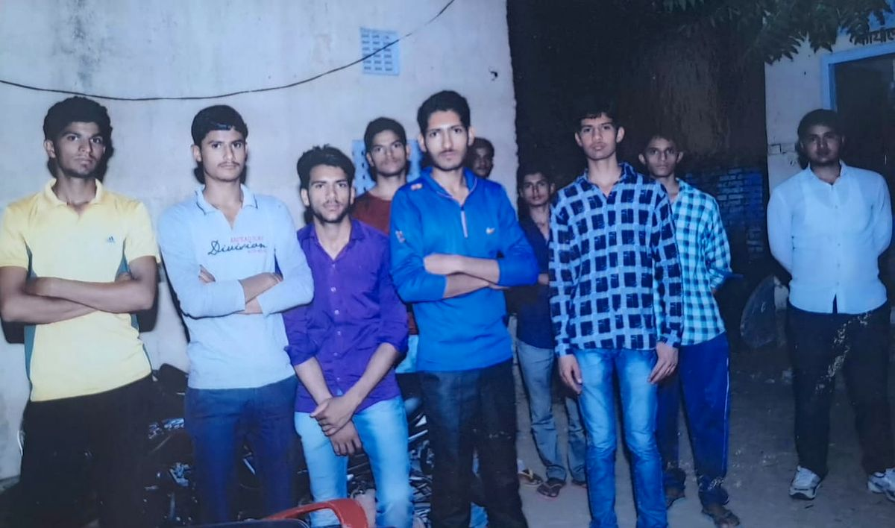

Science & computer labs
Separate Physics, Chemistry, and Biology labs, plus a 40-seat computer lab refreshed every three years.
Est. 1998 · RBSE Affiliation No. 213456 · Nursery – Class XII
Vikas Public School is a co-educational day school built on one idea: real learning grows the way a tree does — slowly, in rings, each year adding to what came before.
About the school
Vikas Public School was founded in 1998 by a small group of educators who wanted a school where children were known by name, not roll number. That principle still shapes class sizes, teacher ratios, and how we measure a good year — not only by results, but by whether a child left more curious than they arrived.
We follow the RBSE curriculum from Nursery to Class XII, with Science, Commerce, and Humanities streams at the senior secondary level, and a campus designed for children to spend as much time outdoors as in.
Academics
Each stage of school is a ring around the last — nothing is dropped, it's built on. Select a stage to see what a year there looks like.
Play-based and activity-led learning across language, numeracy, environmental studies, and art. Every classroom has a reading corner, and every child gets a weekly library period from Class I.
Subjects separate out — Science splits into disciplines by Class VIII, and students choose a second co-curricular track (robotics, theatre, or debate) that continues through Class X.
Full RBSE Secondary curriculum with structured board-exam preparation from Class IX, plus mandatory career counselling sessions to prepare for stream selection.
Science (Medical & Non-Medical), Commerce, and Humanities streams, taught by subject specialists with dedicated labs, and a study hall reserved for board-exam years.
Campus life
Separate Physics, Chemistry, and Biology labs, plus a 40-seat computer lab refreshed every three years.
22,000 volumes, a periodicals corner, and a silent reading room open through lunch and after school.
Football field, athletics track, basketball and volleyball courts, and a covered hall for badminton and indoor games.
GPS-tracked bus routes covering 14 zones of the city, each with a designated attendant on board.
A resident nurse on campus every school day, plus a school counsellor available for academic and personal support.
Dedicated studios for visual art and music, and an auditorium seating 500 for the annual production.
Faculty
A small sample of the 64-member teaching staff — most have taught here for over eight years.
Principal · 19 years at Vikas
M.Ed, Panjab University. Oversees curriculum and school culture; teaches a Class XII English section every year by choice.
Head of Science · 12 years
M.Sc Physics, IIT Roorkee. Runs the Class XI–XII Physics stream and the annual science exhibition.
Head of Primary Wing · 15 years
B.El.Ed, Delhi University. Designed the phonics-first literacy program used from Nursery to Class II.
Counsellor & Careers Lead · 8 years
M.A. Psychology. Runs stream-selection counselling for Class IX and college guidance for Class XII.
Notice board
18 Jul 2026
Students entering Class XI must submit their stream preference form to the counselling cell by 30 July.
22 Jul 2026
Parent-teacher meetings for the middle wing will be held in respective classrooms, 9 AM–12 PM.
05 Aug 2026
Track events begin 7:30 AM on the main ground. All parents are welcome; house colours encouraged.
14 Aug 2026
Flag-hoisting rehearsal for the House Captains and school band after assembly.
01 Sep 2026
Second-term fees are payable by 10 September through the parent portal or accounts office.
Gallery






Photos from our school and community.
From parents
“My daughter joined in Nursery and is now in Class VII — the thing I notice most is that her teachers still know her, not just her grades.”
— Parent, Class VII
“The stream counselling before Class XI actually helped. My son switched from Commerce to Science after two guided conversations, not a snap decision.”
— Parent, Class XI
“Transport tracking through the app has genuinely reduced how much I worry during monsoon traffic.”
— Parent, Class III
Admissions
Admissions for the 2026–27 academic year are open for Nursery through Class IX, subject to seat availability.
Contact